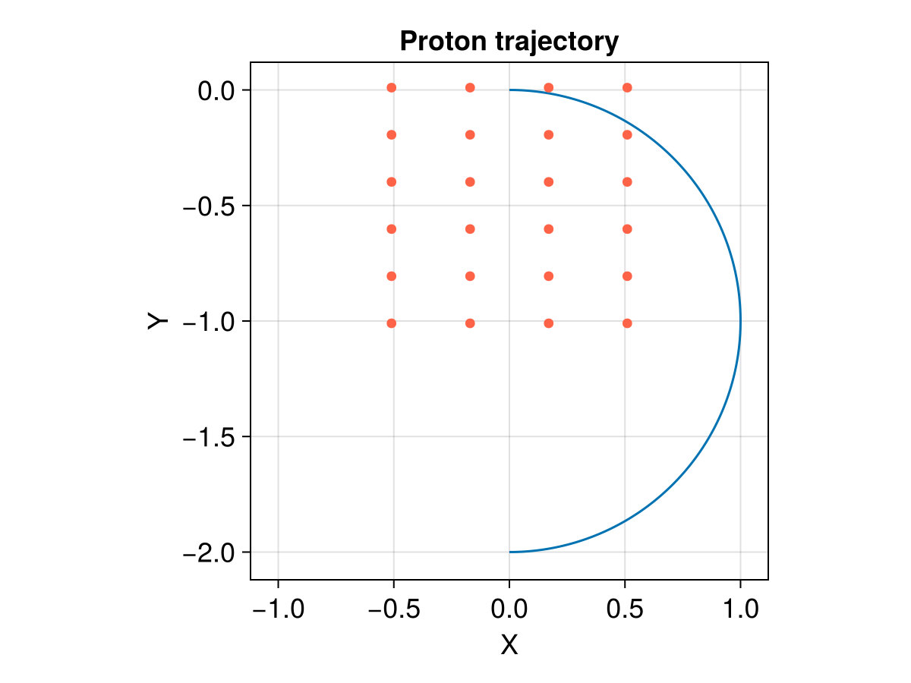

Cosmic Ray Tracing


This example shows how to trace cosmic rays in a background magnetic field. In the original MHD solution, everything is dimensionless. We are following the normalization procedures in Cosmic ray propagation in sub-Alfvénic magnetohydrodynamic turbulence. The Lorentz equation for each particle of charge $q$ and mass $m$. The particle has a momentum $\mathbf{p} = \gamma m \mathbf{v}$ and a velocity $\mathbf{v}$ and propagates in an electromagnetic field $\mathbf{E}$ (no mean electric field), $\mathbf{B} = \delta \mathbf{B} + \mathbf{B}_0$:
\[\begin{aligned} \frac{\mathrm{d}\mathbf{p}}{\mathrm{d} t} &= q (\mathbf{E} + \frac{\mathbf{v}}{c} \times \mathbf{B}) \\ \frac{\mathrm{d}\mathbf{x}}{\mathrm{d} t} &= \mathbf{v} \end{aligned}\]
Each particle is injected with a Lorentz factor $\gamma_0$. Physically, one can think of $\gamma_0$ as a measure of the relativity of the particle, i.e., for small $\gamma_0$ we will recover nonrelativistic equations, and for large $\gamma_0$ –- ultra-relativistic equations. $\gamma_0$ also defines the initial Larmor radius
\[r_{L0} = \gamma_0 m c^2 / (e B_0)\]
where $B_0$ is background magnetic field strength. We also define the particle's synchrotron pulsation
\[\Omega_0 = c / r_{L0}\]
This is measured in cyclotron frequency units, a gyration frequency measured in the particle's own frame. A particle with pitch angle cosine $\mu = \cos\theta = 0$ will make a full orbit in the $B_0$ field in $2 \pi$ time. After normalization, we have
\[\begin{aligned} \frac{\mathrm{d}\mathbf{v}^\prime}{\mathrm{d} t^\prime} &= \gamma^\prime \mathbf{E}^\prime + \mathbf{v}^\prime \times \mathbf{B}^\prime \\ \frac{\mathrm{d}\mathbf{x}^\prime}{\mathrm{d} t^\prime} &= \frac{r_{L 0}}{L} \mathbf{v}^\prime \end{aligned}\]
where $\gamma^\prime = \gamma / \gamma_0$, $\mathbf{v}^\prime = \gamma^\prime \mathbf{v}/c$, and $t^\prime = t / (\gamma^\prime r_{L0}/c)$, $\mathbf{E}^\prime = \mathbf{E} / (B_0)$ is the normalized electric field, $\mathbf{B}^\prime = \mathbf{B} / B_0$ is the normalized magnetic field, and $x^\prime = x / L$. $L$ is the length scale we can choose to decide how many discrete point to have within one gyroradius. For instance, if $L = r_{L 0}$, then 1 unit distance in the dimensionless system is 1 gyroradius for a particle with $\gamma_0$ under $B_0$; if $L = 4 r_{L 0}$, then 1 unit distance in the dimensionless system is 4 gyroradii for a particle with $\gamma_0$ under $B_0$. The smaller $r_{L0} / L$ is, the more likely a particle will experience an inhomogeneous magnetic field during gyration, and the more likely it will get scattered. Note that $\gamma^\prime$ is also a function of $\mathbf{v}$:
\[\gamma^\prime = \gamma / \gamma_0 = \sqrt{\frac{1 - v_0^2/c^2}{1 - v^2/c^2}}\]
In practice, at least in the interstellar medium, the effect of the electric field over high-energy (multi TeV) cosmic rays can be neglected. Therefore, energy is conserved and we are interested in looking at the scattering and diffusion processes. $\gamma^\prime = 1$ without considering radiative loss or re-acceleration.
Thus, the normalized equations can be further simplified:
\[\begin{aligned} \frac{\mathrm{d}\mathbf{v}^\prime}{\mathrm{d} t^\prime} &= \mathbf{v}^\prime \times \mathbf{B}^\prime \\ \frac{\mathrm{d}\mathbf{x}^\prime}{\mathrm{d} t^\prime} &= \frac{r_{L 0}}{L} \mathbf{v}^\prime \end{aligned}\]
By taking $q=1, m=1, c=1, B_0=1$, the characteristic length and frequency scales are
\[\begin{aligned} r_{L0} = \frac{\gamma_0 m c^2}{e\, B_0} = \gamma_0 \\ \Omega_0 = \frac{e\, B_0}{m\, c^2} = 1 \end{aligned}\]
This looks good, but there is still an annoying factor $r_{L 0} / L$ in the second equation. We can remove that by combining $L / r_{L 0}$ with $\mathbf{x}$:
\[\frac{\mathrm{d}\mathbf{x}^\prime}{\mathrm{d} t^\prime} = \mathbf{v}^\prime\]
It simply means that if the original domain length is 1, now it becomes $L / r_{L 0}$.
A standard procedure is as follows:
- Obtain the dimensionless MHD solution.
- Normalize the magnetic field with its background mean magnitude, such that in the new field, $B_0 = 1$. This has a clear physical meaning that a particle with velocity 1 has a gyroradii of 1 and a gyroperiod of $2\pi$.
- Manually choose the spatial extent to be $L/r_{L 0}$. For simplicity, we set $r_{L0}=1$ and the MHD domain extent to be $[-L/2, L/2]$. If we have $nx$ discrete points along that direction, then the grid size is $dx = L / nx$. If $L = nx/4$, then $dx = 1/4$ is a quarter of the gyroradius. In this way we can control how well we resolve the magnetic field for the gyromotion and diffusion process.
Now let's demonstrate this with trace_normalized!.
using TestParticle
using StaticArrays
using OrdinaryDiffEq
using CairoMakie
# Number of cells for the field along each dimension
nx, ny, nz = 4, 6, 2
# Unit conversion factors for length
rL0 = 1.0
L = nx / 4
# Set length scales
x = range(-L/2-1e-2, L/2+1e-2, length=nx) # [rL0]
y = range(-L-1e-2, 1e-2, length=ny) # [rL0]
z = range(-10, 10, length=nz) # [rL0]
B = fill(0.0, 3, nx, ny, nz) # [B0]
B[3,:,:,:] .= 1.0
E(x) = SA[0.0, 0.0, 0.0] # [E₀]
# periodic bc = 2
param = prepare(x, y, z, E, B; species=User, bc=2)
# Initial condition
stateinit = let
x0 = [0.0, 0.0, 0.0] # initial position [l₀]
u0 = [1.0, 0.0, 0.0] # initial velocity [v₀] -> r = 1 * rL0
[x0..., u0...]
end
# Time span
tspan = (0.0, π) # half gyroperiod
prob = ODEProblem(trace_normalized!, stateinit, tspan, param)
sol = solve(prob, Vern9())
### Visualization
f = Figure(fontsize = 18)
ax = Axis(f[1, 1],
title = "Proton trajectory",
xlabel = "X",
ylabel = "Y",
limits = (2*x[1]-0.1, 2*x[end]+0.1, 2*y[1]-0.1, 2*y[end]+0.1),
aspect = DataAspect()
)
lines!(ax, sol, idxs=(1,2))
xgrid = [i for i in x, _ in y]
ygrid = [j for _ in x, j in y]
scatter!(ax, xgrid[:], ygrid[:], color=:tomato)

This page was generated using DemoCards.jl and Literate.jl.